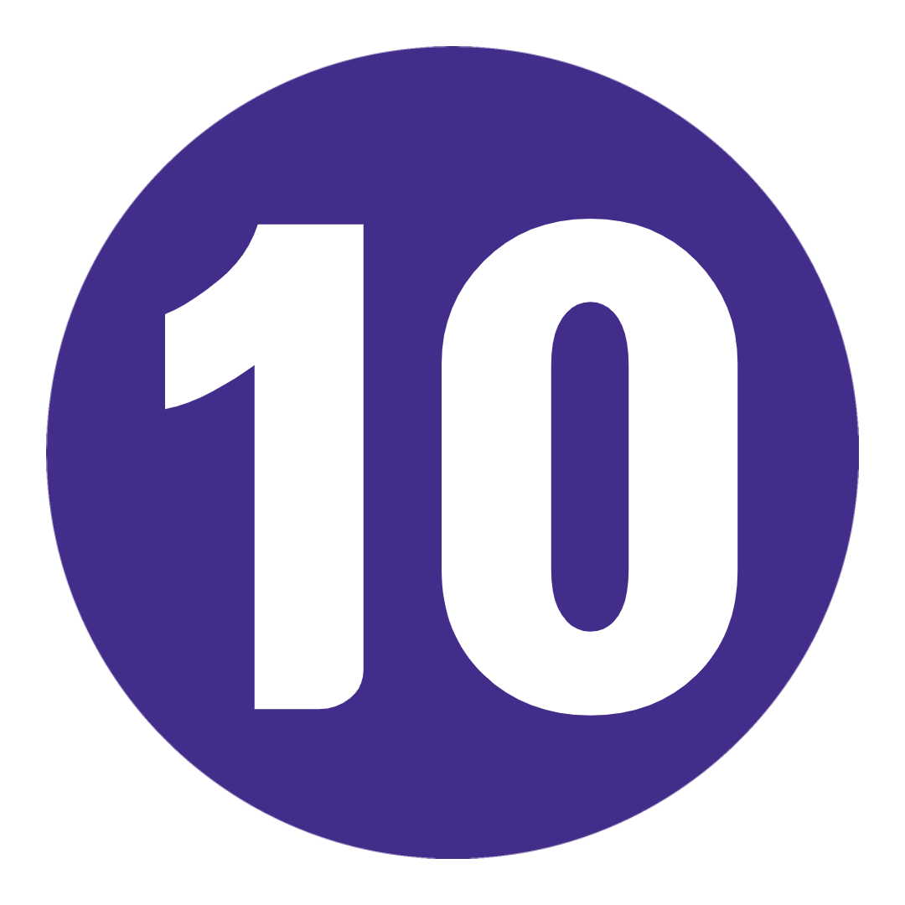
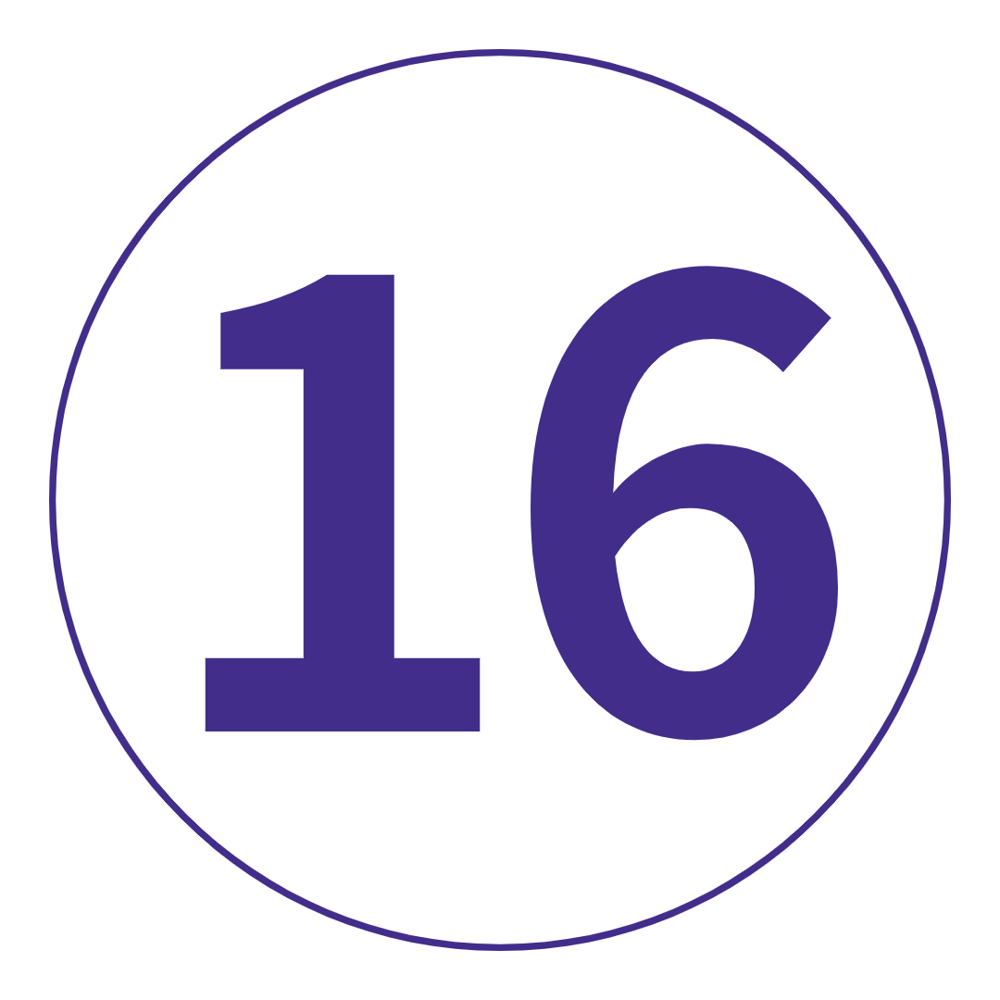

여행 개요
지도
나를 위한 여행인가? 깊이. 달리 말하면. 모험심.
모로코가 바자회, 낙타 타기, 쿠스쿠스가 가득한 #방황하는 사진이라고 생각했나요? 네, 그렇습니다. 하지만 11일의 회오리 바람이 불면 모로코의 측면을 볼 수 있을 것입니다.
Instagram 피드가 제대로 작동하지 않습니다. 독특한 문화에 대해 더 깊이 파고들어 새로운 경험을 하고 소수의 절대적인 전설과 함께 다른 세계와 다른 세계를 발견하십시오. 얄라!
여행 일정
-
 모로코 카사블랑카
모로코의 대서양 연안을 따라 터치다운. 새롭고 이국적인 것을 경험할 준비가 되셨습니까? 시작할 장소입니다. 공항에서 Topdeck 담당자를 찾은 다음(힌트: 귀하의 이름이 적힌 플래카드를 들고 있습니다), 반짝이는 물, 야자수가 드리워진 거리, 거리 예술 및 식민지 시대 건물이 혼합된 카사블랑카를 감상하세요. 네 드디어 오셨습니다. 호텔에 짐을 버리고 갱단을 만나고 포함된 저녁 식사를 즐깁니다. 현지 가족의 집에서 즐기는 전통 모로코 식사입니다. 여행을 시작하는 더 좋은 방법을 말해보세요.
모로코 카사블랑카
모로코의 대서양 연안을 따라 터치다운. 새롭고 이국적인 것을 경험할 준비가 되셨습니까? 시작할 장소입니다. 공항에서 Topdeck 담당자를 찾은 다음(힌트: 귀하의 이름이 적힌 플래카드를 들고 있습니다), 반짝이는 물, 야자수가 드리워진 거리, 거리 예술 및 식민지 시대 건물이 혼합된 카사블랑카를 감상하세요. 네 드디어 오셨습니다. 호텔에 짐을 버리고 갱단을 만나고 포함된 저녁 식사를 즐깁니다. 현지 가족의 집에서 즐기는 전통 모로코 식사입니다. 여행을 시작하는 더 좋은 방법을 말해보세요.
키워드 저녁 + 공항 교통편 + 현지 게스트 하우스에서 전통 저녁 식사 카사블랑카-셰프샤우엔
반짝이는 푸른 해안을 푸른 도시로 바꾸세요. 우리는 Chefchaouen에 도전합니다. 리프 산맥(Rif Mountains)의 우뚝 솟은 봉우리 사이에 자리 잡은 이 매혹적인 도시는 완전히 이 세상에서 벗어난 것입니다. 눈부신 파란색 건물들. 좁은 골목길의 미로. 그리고 정통 현지 분위기. 우리는 여행 리더와 함께 산책을 하며 방향을 잡을 것입니다. 그런 다음 갱단과 함께 현지 레스토랑에서 저녁 식사를 하거나 나가서 자발적으로 내가 온 이유를 할 수 있습니다. 100% 당신에게 달려 있습니다.
카사블랑카-셰프샤우엔
반짝이는 푸른 해안을 푸른 도시로 바꾸세요. 우리는 Chefchaouen에 도전합니다. 리프 산맥(Rif Mountains)의 우뚝 솟은 봉우리 사이에 자리 잡은 이 매혹적인 도시는 완전히 이 세상에서 벗어난 것입니다. 눈부신 파란색 건물들. 좁은 골목길의 미로. 그리고 정통 현지 분위기. 우리는 여행 리더와 함께 산책을 하며 방향을 잡을 것입니다. 그런 다음 갱단과 함께 현지 레스토랑에서 저녁 식사를 하거나 나가서 자발적으로 내가 온 이유를 할 수 있습니다. 100% 당신에게 달려 있습니다.
키워드 아침 + 셰프샤우엔 오리엔테이션
추가 옵션 현지 레스토랑에서 저녁 식사 셰프사우엔
당신은 탐험의 자유를 원했습니다. 그래서, 여기 당신을 할 24 시간입니다. 우리의 제안? 시티 투어로 시작해보세요. 현지 가이드가 도시의 역사적 과거에 대해 자세히 알려줄 것입니다. 모든 숨겨진 보석을 지적하십시오. 꼭 봐야 할 'Blue City'를 선택하세요. 스페인 모스크를 확인하십시오. 메디나에서 기념품을 구입하세요. 현지 터키식 목욕탕에서 휴식을 취하십시오. 또는 Nike를 신고 산으로 나가 놀라운 폭포와 탁 트인 전망을 감상하세요. 여기 아프리카 최고의 하이킹 코스가 있습니다. 그런 다음 도시 광장에서 맛있는 길거리 음식을 먹기 위해 갱단을 모으십시오. 이것은 살아있는 것입니다!
셰프사우엔
당신은 탐험의 자유를 원했습니다. 그래서, 여기 당신을 할 24 시간입니다. 우리의 제안? 시티 투어로 시작해보세요. 현지 가이드가 도시의 역사적 과거에 대해 자세히 알려줄 것입니다. 모든 숨겨진 보석을 지적하십시오. 꼭 봐야 할 'Blue City'를 선택하세요. 스페인 모스크를 확인하십시오. 메디나에서 기념품을 구입하세요. 현지 터키식 목욕탕에서 휴식을 취하십시오. 또는 Nike를 신고 산으로 나가 놀라운 폭포와 탁 트인 전망을 감상하세요. 여기 아프리카 최고의 하이킹 코스가 있습니다. 그런 다음 도시 광장에서 맛있는 길거리 음식을 먹기 위해 갱단을 모으십시오. 이것은 살아있는 것입니다!
키워드 아침
추가 옵션 쉐프샤우엔 시내 투어 Chefchaouen to Fes via Moulay Idriss and Volubilis
모로코의 신성한 심장인 물레이 이드리스로 향하는 경치 좋은 길을 따라 마차 창에 얼굴을 붙이세요. 이 장소는 매우 신성한 것으로 간주되어 2005년까지 비무슬림이 거의 접근할 수 없었습니다. 의미? 그것은 비포장 도로의 정의입니다. 오리엔테이션 산책에서 편안한 현지 분위기를 느껴보세요. 현지 가족과 함께 맛있는 가정식 점심을 먹기 전에. 그런 다음: 고고학 모자를 쓰고 현지 가이드와 함께 로마 유적을 확인하기 위해 Volubilis로 갑니다. 더 많은 역사를 원하십니까? 좋은! 오늘 밤 우리는 Fes로의 여행에서 오래된 모로코의 중심부로 깊숙이 향할 것입니다.
Chefchaouen to Fes via Moulay Idriss and Volubilis
모로코의 신성한 심장인 물레이 이드리스로 향하는 경치 좋은 길을 따라 마차 창에 얼굴을 붙이세요. 이 장소는 매우 신성한 것으로 간주되어 2005년까지 비무슬림이 거의 접근할 수 없었습니다. 의미? 그것은 비포장 도로의 정의입니다. 오리엔테이션 산책에서 편안한 현지 분위기를 느껴보세요. 현지 가족과 함께 맛있는 가정식 점심을 먹기 전에. 그런 다음: 고고학 모자를 쓰고 현지 가이드와 함께 로마 유적을 확인하기 위해 Volubilis로 갑니다. 더 많은 역사를 원하십니까? 좋은! 오늘 밤 우리는 Fes로의 여행에서 오래된 모로코의 중심부로 깊숙이 향할 것입니다.
키워드 아침 + 점심 + 물레 이드레스 오리엔테이션 투어 + 물레이 이드리스에서 현지 가족과 함께 저녁식사 + Volubillis의 유적지 투어
추가 옵션 낙타 타기: 20달러부터 페스
우리가 현지 가이드와 함께 하루 종일 도시를 도는 채 거리를 뛸 때 영묘, 모스크 및 메디나가 카드에 있습니다. Fes el-Bali에 있는 9,000개의 좁은 자갈길에는 향신료, 음식 노점 및 무두질 공장이 늘어서 있습니다. 그러니 잠시도 지체하지 말고 탐험을 시작하세요! 지역 제혁소를 방문하십시오(힌트: 박하에게 예라고 말하면 필요할 것입니다). 멋진 환경에서 모로코 타파스를 위해 폐허가 된 정원으로 가십시오. 모든 전망을 보려면 Zalagh 산을 오르십시오. 또는 몸을 빛나게 하고 광택을 내기 위해 터키식 목욕탕을 찾아보십시오. 힘든 삶입니다. 오늘 밤 Café Clock에서 낙타 버거(또는 잼이 아니라면 치킨 쿠스쿠스)를 맛보세요.
페스
우리가 현지 가이드와 함께 하루 종일 도시를 도는 채 거리를 뛸 때 영묘, 모스크 및 메디나가 카드에 있습니다. Fes el-Bali에 있는 9,000개의 좁은 자갈길에는 향신료, 음식 노점 및 무두질 공장이 늘어서 있습니다. 그러니 잠시도 지체하지 말고 탐험을 시작하세요! 지역 제혁소를 방문하십시오(힌트: 박하에게 예라고 말하면 필요할 것입니다). 멋진 환경에서 모로코 타파스를 위해 폐허가 된 정원으로 가십시오. 모든 전망을 보려면 Zalagh 산을 오르십시오. 또는 몸을 빛나게 하고 광택을 내기 위해 터키식 목욕탕을 찾아보십시오. 힘든 삶입니다. 오늘 밤 Café Clock에서 낙타 버거(또는 잼이 아니라면 치킨 쿠스쿠스)를 맛보세요.
키워드 아침 + 페스 현지 가이드 투어 Fes to Erfoud via Ifrane and Midelt
진실 폭탄 경고: 오늘 Fes에서 Erfoud까지 차로 조금 이동했습니다. AUX 코드를 연결하고 에이커에 달하는 삼나무 숲과 멋진 풍경을 지나갈 때 얼굴을 창문에 붙이십시오. 우리는 하이 아틀라스 산맥의 숨막히는 전경을 보기 위해 Ifrane(모로코의 스위스 인수)과 Midelt에 들를 것입니다. 그런 다음, 알프스의 신선한 Erfoud의 고도에 적응해야 합니다. 'Door to the Desert'. 오늘 밤 저녁 식사는 우리에게 있습니다. 그러나 당신은 madfouna: 정통 장작불로 구운 베르베르 '피자'를 먹어봐야 합니다.
Fes to Erfoud via Ifrane and Midelt
진실 폭탄 경고: 오늘 Fes에서 Erfoud까지 차로 조금 이동했습니다. AUX 코드를 연결하고 에이커에 달하는 삼나무 숲과 멋진 풍경을 지나갈 때 얼굴을 창문에 붙이십시오. 우리는 하이 아틀라스 산맥의 숨막히는 전경을 보기 위해 Ifrane(모로코의 스위스 인수)과 Midelt에 들를 것입니다. 그런 다음, 알프스의 신선한 Erfoud의 고도에 적응해야 합니다. 'Door to the Desert'. 오늘 밤 저녁 식사는 우리에게 있습니다. 그러나 당신은 madfouna: 정통 장작불로 구운 베르베르 '피자'를 먹어봐야 합니다.
키워드 아침 + 저녁 + 아틀라스 산맥 여행 에르푸드에서 메르조가 사막 캠프까지
타오르는 붉은 모래 언덕이 끝없이 펼쳐져 있습니다. 석양에 불타는 색의 만화경입니다. 눈부신 별들로 가득 찬 광활한 맑은 하늘. 사하라 사막에 오신 것을 환영합니다. Erfoud에서 자유로운 아침을 보낸 후, 우리는 모래 심연으로 이동합니다. Erg Chebbi의 모래 언덕에 들른 후 외딴 사막 캠프*에 도착합니다. 메르조가(Merzouga)는 언제든지 주변의 모래 언덕에 휩싸일 수 있는 것처럼 보이므로 편안히 앉아 경치를 즐기십시오. 나중에 앨리스 낙타를 타고 일몰의 즐거움을 기억할 수 있습니다. 오늘 밤 우리는 모닥불 주위에 모여 갱단과 함께 전통적인 저녁 식사를 할 것입니다. 이것이 당신이 온 이유입니다. *현실 확인: 우리는 사하라 사막에 있는 동안 소박한 텐트에 머물 것입니다. 그리고 아니요, 헤어드라이어를 위한 에어컨이나 전원 플러그도 없습니다. 당신은 결국 세계에서 가장 큰 뜨거운 사막 한가운데에 있습니다...
에르푸드에서 메르조가 사막 캠프까지
타오르는 붉은 모래 언덕이 끝없이 펼쳐져 있습니다. 석양에 불타는 색의 만화경입니다. 눈부신 별들로 가득 찬 광활한 맑은 하늘. 사하라 사막에 오신 것을 환영합니다. Erfoud에서 자유로운 아침을 보낸 후, 우리는 모래 심연으로 이동합니다. Erg Chebbi의 모래 언덕에 들른 후 외딴 사막 캠프*에 도착합니다. 메르조가(Merzouga)는 언제든지 주변의 모래 언덕에 휩싸일 수 있는 것처럼 보이므로 편안히 앉아 경치를 즐기십시오. 나중에 앨리스 낙타를 타고 일몰의 즐거움을 기억할 수 있습니다. 오늘 밤 우리는 모닥불 주위에 모여 갱단과 함께 전통적인 저녁 식사를 할 것입니다. 이것이 당신이 온 이유입니다. *현실 확인: 우리는 사하라 사막에 있는 동안 소박한 텐트에 머물 것입니다. 그리고 아니요, 헤어드라이어를 위한 에어컨이나 전원 플러그도 없습니다. 당신은 결국 세계에서 가장 큰 뜨거운 사막 한가운데에 있습니다...
키워드 아침 + 저녁 + 일몰 낙타 타기 + 전통 모닥불 저녁 식사 + 사막 캠프에서 숙박 메르조가에서 토드라 협곡과 와르자자트를 거쳐 아이트 벤하두까지
Aït Benhaddou로 가는 길에 오늘 로드러너 만화 속으로 들어가십시오. 먼저? 토드라 협곡. 인상적인 주황색 사암 봉우리, 졸졸졸 흐르는 개울, 창밖에서 노는 이상한 낙타의 3D 풍경이 있는 이곳은 숨이 멎을 것입니다. 그런 다음: 우리가 'Ouallywood'에 들어서면서 외침 조명, 카메라, 액션. Ouarzazate의 드넓은 Taourirt Kasbah는 대규모 예산 블록버스터의 배경이 되었습니다. 잘 알려진 Trip Leader와 함께 산책하면서 이름을 지어보세요. 나중에 우리는 고대 Aït Benhaddou에서 갱단과 함께 저녁 식사를 하게 될 것입니다.
메르조가에서 토드라 협곡과 와르자자트를 거쳐 아이트 벤하두까지
Aït Benhaddou로 가는 길에 오늘 로드러너 만화 속으로 들어가십시오. 먼저? 토드라 협곡. 인상적인 주황색 사암 봉우리, 졸졸졸 흐르는 개울, 창밖에서 노는 이상한 낙타의 3D 풍경이 있는 이곳은 숨이 멎을 것입니다. 그런 다음: 우리가 'Ouallywood'에 들어서면서 외침 조명, 카메라, 액션. Ouarzazate의 드넓은 Taourirt Kasbah는 대규모 예산 블록버스터의 배경이 되었습니다. 잘 알려진 Trip Leader와 함께 산책하면서 이름을 지어보세요. 나중에 우리는 고대 Aït Benhaddou에서 갱단과 함께 저녁 식사를 하게 될 것입니다.
키워드 아침 + 저녁 + 토드라 협곡 방문 + 와르자자트 방문 아이트 벤하두-마라케시
검투사. 아라비아의 로렌스. 왕좌의 게임. Aït Benhaddou의 천 년 된 ksar에는 유명한 친구가 몇 명 있습니다. 우리는 Trip Leader와 함께 유네스코 보호 카스바를 도보로 둘러보며 다른 세상의 분위기를 만끽할 것입니다. 그 후 우리는 등골이 오싹해지는 Tizi n'Tichka 산길을 지나 마라케시로 향합니다. 그 다음에? 나머지는 당신에게 달려 있습니다. 밤 노점상 광란을 위해 Jemaa el-Fnaa 광장으로 향하십시오. 메디나의 좁은 거리를 거닐어 보세요. 아니면 세련된 레스토랑과 라이브 음악을 즐길 수 있는 Gueliz로 향하십시오. 이 모든 것을 포용할 수 있는 기회입니다.
아이트 벤하두-마라케시
검투사. 아라비아의 로렌스. 왕좌의 게임. Aït Benhaddou의 천 년 된 ksar에는 유명한 친구가 몇 명 있습니다. 우리는 Trip Leader와 함께 유네스코 보호 카스바를 도보로 둘러보며 다른 세상의 분위기를 만끽할 것입니다. 그 후 우리는 등골이 오싹해지는 Tizi n'Tichka 산길을 지나 마라케시로 향합니다. 그 다음에? 나머지는 당신에게 달려 있습니다. 밤 노점상 광란을 위해 Jemaa el-Fnaa 광장으로 향하십시오. 메디나의 좁은 거리를 거닐어 보세요. 아니면 세련된 레스토랑과 라이브 음악을 즐길 수 있는 Gueliz로 향하십시오. 이 모든 것을 포용할 수 있는 기회입니다.
키워드 아침 + 유네스코 세계 문화 유산에 등재된 Aït Benhaddou Kasbah 방문 마라케시
좋아, 당황하지 마 오늘이 마지막 하루야 그러니, 일초도 낭비하지 마! 현지 안내 도보 투어로 일을 시작할게요. 오래된 미디어, 화려한 수크 좌판을 거닐고, 유명한 쿠투비아 모스크 광장을 구경하고, 제마 엘 프나 광장에 있는 뱀 부적을 꿈틀거리며 지나갑니다. 그런 다음 Amal Association 레스토랑에서 제공되는 점심 식사(교육과 취업으로 혜택을 받지 못하는 지역 여성들에게 힘을 실어주는 옵션)로 여가 시간을 최대한 활용하십시오. 아니면 술집에서 주방장 모자를 쓰든지. 좀 더 깊이 파고들까요? 자전거를 타고 도시 외곽에 있는 야자수 숲에 가보세요. 지역 스파에서 마사지 및 해맘 체험으로 긴장을 풀고 긴장을 푸십시오. 아니면 르자르댕 시크릿 강에서 애프터눈 티를 마시며 도시의 혼란에서 벗어나야 한다. 오늘 밤, 조직원들을 모아 마지막으로 입에 침이 고이는 술집을 노마드로 향하라. 뭐. A. 여행.
키워드 아침 + 마라케시 현지 가이드 도보여행
추가 옵션 Amal Association 레스토랑에서 그룹 점심: 현지 가격부터 / 현지 스파에서 터키식 목욕탕 및 마사지: 750 MAD부터 / Tagine 요리 교실: 640 MAD부터 / 음식 투어: 605 MAD부터 / Palmery 사이클링 투어: 350 MAD부터 마라케시
그대로, 모든 것이 끝났습니다. 아침 식사를 하고 인스타그램 손잡이를 바꾸세요. 내년 동창회 여행에 필요할 것입니다. 다음은 어디로? 아시아? 아프리카? 유럽? 모든것 위에? 네!
마라케시
그대로, 모든 것이 끝났습니다. 아침 식사를 하고 인스타그램 손잡이를 바꾸세요. 내년 동창회 여행에 필요할 것입니다. 다음은 어디로? 아시아? 아프리카? 유럽? 모든것 위에? 네!
키워드 아침
포함된 항목
포함된 경험
숙소
교통
현지 게스트 하우스에서 전통 저녁 식사
쉐프샤우엔 오리엔테이션 워크
물레 이드리스 오리엔테이션 투어
물레이 이드리스에서 현지 가족과 함께하는 전통 점심 식사
Volubilis의 고고학 유적지 현지 가이드 투어
페스 현지 가이드 투어
사하라 사막에서 일몰 낙타 타기
Merzouga 사막 캠프에서 전통적인 캠프파이어 저녁 식사
사하라 사막의 사막 캠프에서 숙박
토드라 협곡 방문
와르자자트 방문
아틀라스 산맥 여행
유네스코 세계 문화 유산에 등재된 Aït Benhaddou Kesbah 방문
마라케시의 현지 가이드 워킹 투어
호텔 8박(트윈/더블 쉐어), 카스바 1박, 사막 캠프 1박
에어컨 미니 버스 선택 활동
- 현지 레스토랑에서 그룹 저녁 식사: 현지에서 이용 가능한 가격부터
- 쉐프샤우엔 시내 투어: 현지 가격부터
- Amal Association 레스토랑에서 그룹 점심: 현지 가격부터
- 현지 스파에서 터키식 목욕탕 및 마사지: 750 MAD부터
- 타긴 요리 교실: 640 MAD부터
- 음식 투어: 605 MAD부터
-Palmery 사이클링 투어: 350 MAD부터
투어 동영상, 사진, 리뷰
11 일
1 국가1 인당
US $ 1,426.00 부터
여행 코드: MXMEMM-1
여행 노트 다운로드-
날짜 및 가격 확인
2021년 10월 10월 8일 금 ~ 10월 18일 월 모로코 익스플로러 2021-22 US$1,434.00 2021년 12월 12월 10일 금 ~ 12월 20일 월 모로코 익스플로러 2021-22 US$1,434.00 2022년 1월 1월 7일 금 ~ 1월 17일 월 모로코 익스플로러 2021-22 US$1,426.00 2022년 2월 2월 4일 금 ~ 2월 14일 월 모로코 익스플로러 2021-22 US$1,426.00 2022년 3월 3월 18일 금 ~ 3월 28일 월 모로코 익스플로러 2021-22 US$1,426.00
여행개요
 밤
밤 식사
식사 답사
답사 최대 인원  운전사
운전사 여행 리더
여행 리더
시 작 18 : 00 카사블랑카 종 료 09 : 00 마라케시